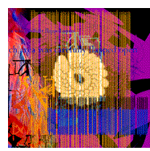

| For guitar, I opted for Reeves Gabrels, still for me one of the great unknowns of rock. A man of huge inventiveness and perversity, he really made an admirer of me when, in a 1989 concert with Tin Machine, he executed an extraordinary solo with a fender guitar and a 9" stainless steel dildo. Sterling Campbell, now with Soul Asylum, had played drums for me on Black Tie, White Noise, and sort of "tranced" in for this set. A bit of a walking mushroom, Sterling casts a major spell over any room he walks in and is a pure child-like spirit, adding incandescence to all he plays. In our New York sessions we picked up Carlos Alomar, my old friend and rhythm guitarist, who has worked with me since 1974. |
| Having decorated the Mountain room with crazed color pieces of fabric brought from London by Brian, I equipped it with paints, charcoal, scissors, paper and canvas to give us something to flyaway on when not playing.I also brought in my computer complete with a new program developed by an acquaintance that had the ability to randomize my writing line by line, three-word block by three-word block, and deliver up totally different composites of image and description from that which I programmed in. A sort of electronic Bill Burroughs "cut--ups" machine. It did in seconds what since 1973 I had been doing with scissors and glue. The first major session was on the 12th of March, 1994. Brian set up his various gizmos, rhythm machines, toy pianos, clocks, samplers, radio, etc., and gave each musician a flash card. On it he had written a brief character description. "You are the last remaining survivor of a catastrophic event and you will endeavor to play in such a way as to prevent feelings of loneliness developing within yourself," or "You are a disgruntled ex-member of a South African rock band. Play the notes they won't allow." I've made these up, but you get the idea. Our musicians were then enjoined to play within the parameters of these roles as much as was humanly possible. |
| My card informed me that I was a soothsayer and town-crier bringing stories and news to a society where information networks had broken down. We started playing around twelve noon and didn't stop for three hours, new ideas and new rhythms being thrown in every few minutes by Brian or another of the band. I had a table in front of me covered with regular lyrics and randomized pieces from which I would improv either in song or in dialogue both as narrator and character. Out of this first day came the bedrock of what was to be Adler's Diaries. Nathan Adler, Ramona A. Stone and Algeria Touchshriek came almost fully formed from these sessions, the other characters developing over the next few days. |
| ..These include Leon Blank, a young man of mixed race, who is implicated in a series of hideous murders of doubtful aesthetic value. The first suspected victim is quite possibly Baby Grace Blue, a fourteen-year-old runaway. However, the only evidence of Grace's past existence is a brief and sad cassette message found shortly after the discovery of the corpse's grisly unidentifiable remains. Ramona A. Stone, a survivor of the seventies, is a second suspect. Her bizarre history of activities equals her sartorial self. A one-time high-priestess of a Berlin-based suicide cult, then proprietress of a body-parts jewelry store in London, the nineties find her underground in Oxford Town, surrounded by her sycophantic coteries of miscreants and acolytes. Algeria Touchshriek--owner of a small shop on the corner, behind the Museum of Modern Parts--the Fishman and the Minotaur flesh out, so to speak, this ever-growing cast of characters, who will parade their secrets and ambitions though this album, under the ever-suspicious scrutiny of Detective- Professor Nathan Adler of the Art-Crime Squad. The series or hyper cycle of musical drama will terminate in 1999. It will be collectively known as "The Nathan Adler Diaries." |